Manual para vender y atender por WhatsApp con tu equipo: bandeja compartida, catálogo, carrito, cobros, cotizaciones, chatbots, agente con IA, reparto automático y app en el celular.
Todo el programa viene incluido. Lo único que se activa aparte es el Agente con IA.
Versión del 28 de octubre de 2026 · Los nombres y datos de las capturas son ficticios.
¿Dudas? WhatsApp 099 640 8397 · info@tukansoftware.com · tukansoftware.com
| Nuevo | Para qué te sirve | Dónde está |
|---|---|---|
| Todo incluido | Ya no se cobra por módulos: campañas, varios agentes, embudo, catálogo, pedidos, chatbots, reportes y todo lo demás vienen en el mismo plan. | — |
| Catálogo | Tus productos o servicios con foto, precio y stock. | Más → Catálogo |
| Carrito y pedidos | Arma el pedido del cliente desde el chat; él también puede comprar tocando. | Chat → Carrito · Pedidos |
| Cobros | Pago con tarjeta por Plux (el pedido pasa solo a Pagado) o Payphone, enlace fijo (DeUna, PayPal…) o datos de transferencia. | Más → Cobros y cotizaciones |
| Cotización en PDF | Se arma sola con tus datos, IVA y validez, y se manda por WhatsApp. | Chat → Carrito |
| Chatbots | Conversaciones por pasos con botones y preguntas, sin programar. | Más → Chatbots |
| Agente con IA Extra | Contesta solo las 24 horas, arma el carrito y pasa a una persona cuando hace falta. | Más → Agente con IA |
| Pregúntale a la IA Extra | Pregunta en palabras: quién está listo para comprar, arma una campaña, cómo te fue. Y un resumen cada mañana. | Más → Pregúntale a la IA |
| Llamadas de WhatsApp | Contesta y haz llamadas de WhatsApp desde el panel o el celular. | Más → Llamadas · Chat |
| Reparto automático | Cada conversación nueva llega sola a una persona disponible del equipo. | Más → Equipo y reparto |
| Campos personalizados | Guarda ciudad, cédula, talla, cumpleaños… de cada cliente. | Más → Campos personalizados |
| Origen por anuncio | Sabes de qué anuncio de Facebook o Instagram llegó cada cliente y cuánto vendiste por anuncio. | Chat · Reportes |
| Tienda en línea | Shopify y WooCommerce: aviso de pedido por WhatsApp y recordatorio de carrito abandonado. | Más → Tienda en línea |
| App en el celular | Instálalo como app y recibe avisos aunque el navegador esté cerrado. | Más → App en el celular |
Abajo tienes el menú con lo que más usas: Bandeja, Pedidos (o Pendientes, si tu número también está en la app del celular), Contactos, Embudo, Automático y Más.
En Más está todo lo demás, ordenado en cuatro grupos:
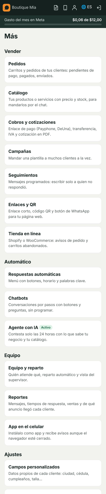
En la Bandeja llegan todas las conversaciones. Puedes filtrar por Sin leer, Míos, Sin asignar, clientes, desconocidos o personales.
Al abrir un chat ves:
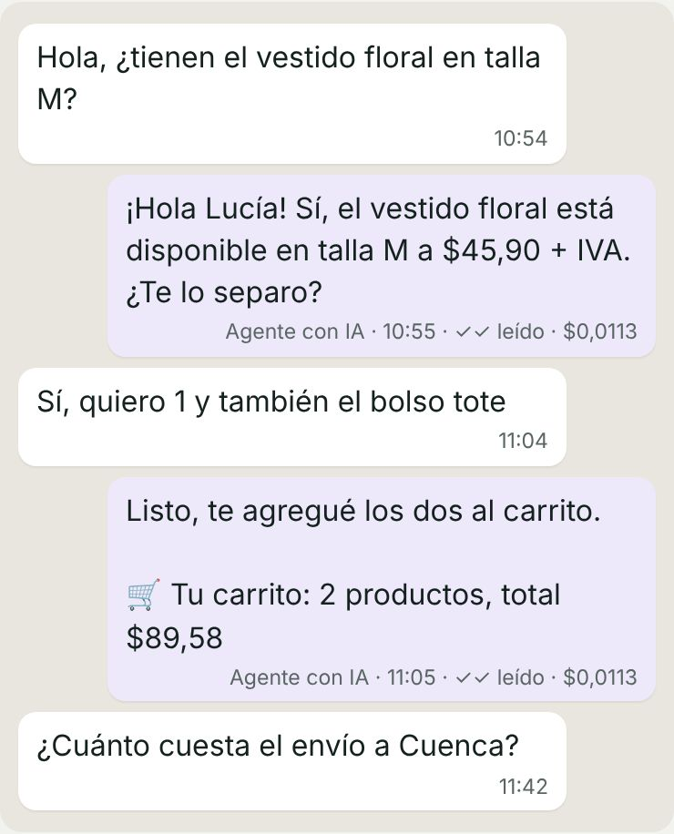
En Más → Catálogo agregas lo que vendes:
Para subir muchos de una vez: Subir muchos productos con Excel. En Excel pon las columnas nombre, precio, stock, código, descripción y guarda como CSV. Si un código ya existe, se actualiza ese producto.
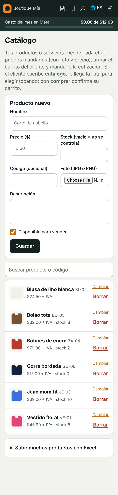
Abre 🛒 Carrito y cotización:
En Pedidos ves todos, por estado: Carrito → Pendiente de pago → Pagado → Enviado → Entregado (o Cancelado).
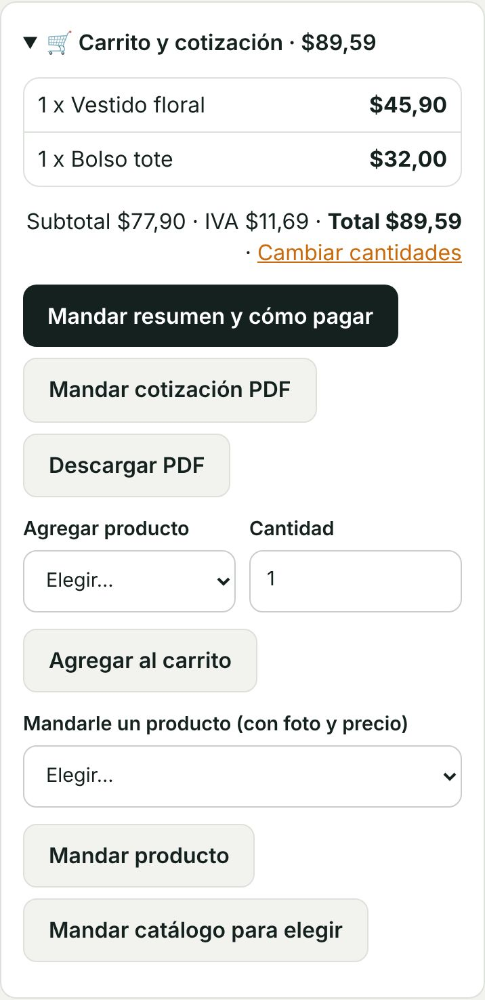
Lleva tu nombre, RUC, dirección y WhatsApp; los datos del cliente; los productos; subtotal, IVA y total; hasta cuándo es válida; el enlace de pago, los datos de transferencia y tus condiciones.
Esos datos se ponen una vez en Más → Cobros y cotizaciones.
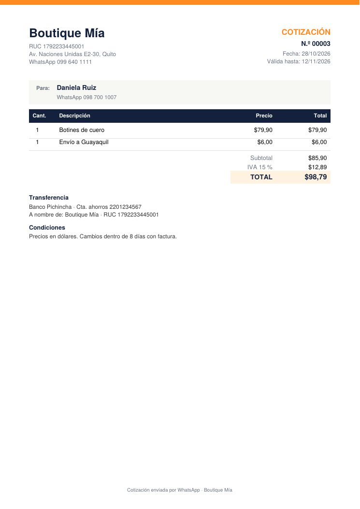
En Más → Cobros y cotizaciones:
{total} y {pedido} dentro del enlace.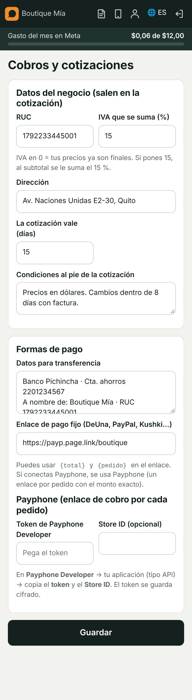
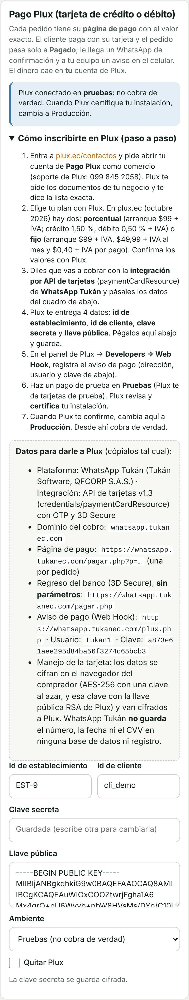
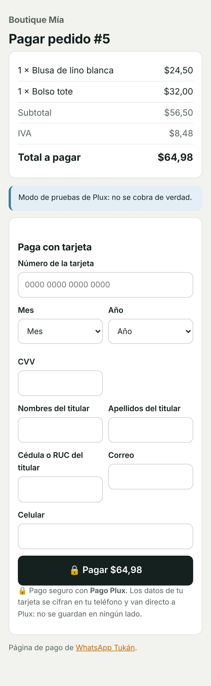
Sin que nadie del equipo intervenga (y sin necesidad de IA):
Un chatbot es una conversación armada por pasos. Cada paso puede ser:
| Paso | Qué hace |
|---|---|
| Mensaje | Manda un texto y sigue. |
| Pregunta con botones | Hasta 10 opciones; cada una lleva a otro paso. |
| Pregunta abierta | Guarda la respuesta en el nombre, las notas o un campo personalizado (si no es válida, vuelve a preguntar). |
| Pasar a una persona | Se calla y reparte la conversación al equipo. |
| Terminar | Manda un texto y termina. |
Cada paso también puede poner una etiqueta y mover al cliente en el embudo.
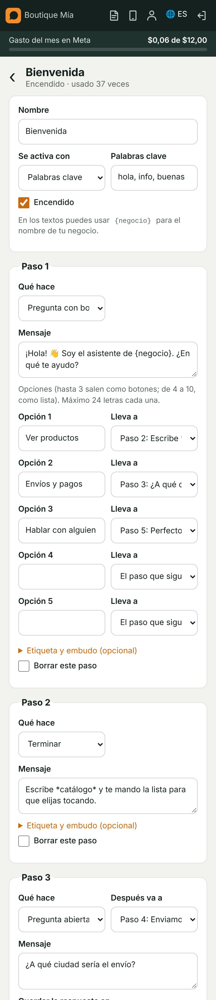
Contesta a tus clientes con lo que escribes en Lo que sabe la IA de tu negocio y con tu catálogo (precios y stock). Contesta en el idioma del cliente.
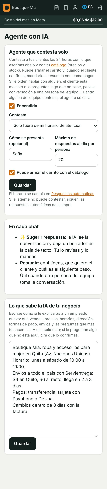
No hagas clic, solo pregunta. En Más → Pregúntale a la IA escribe en palabras lo que quieres saber o hacer. La IA lee las cifras y las conversaciones de tu número y te contesta.
Marca Mandarme el resumen al celular cada mañana y la hora. Te llega un aviso con cómo fue ayer, lo que quedó pendiente (chats sin responder, pedidos por cobrar, llamadas perdidas) y 3 cosas para hacer hoy.
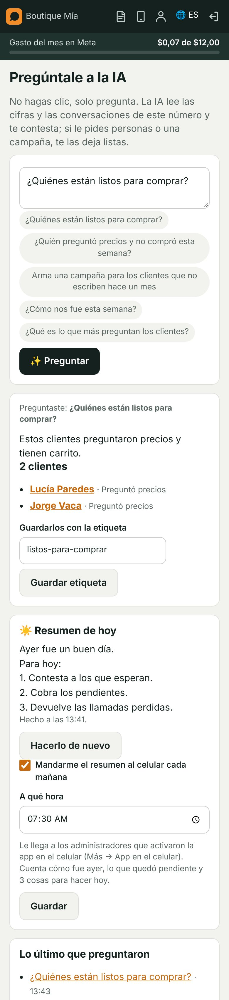
Tus clientes te llaman con el botón 📞 de WhatsApp y contestas desde el panel (o desde la app en el celular). También puedes llamarlos tú.
Arriba del panel aparece 📞 Llamada de… con Contestar y Rechazar (y suena). Contestar abre una ventanita con la llamada: puedes seguir usando el panel en la otra. La primera persona del equipo que contesta se la lleva. Si nadie contesta, queda como perdida y te llega un aviso.
En el chat toca Pedir permiso para llamar: al cliente le llega un botón de WhatsApp para aceptar (vale 7 días, o siempre). Cuando acepta, aparece 📞 Llamar.
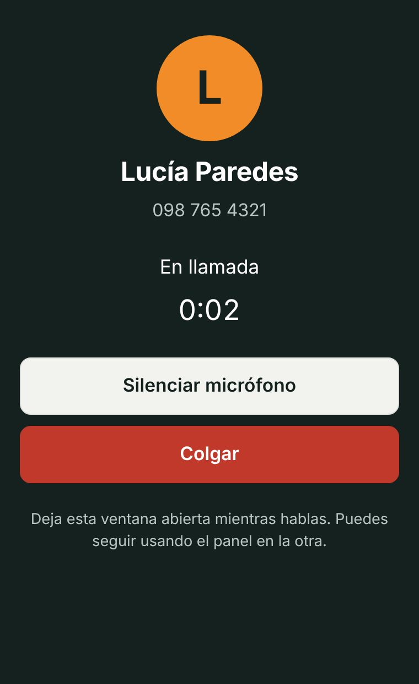
En Más → Llamadas ves las últimas llamadas: quién llamó, si contestaron, cuánto duró y quién atendió. En cada chat salen las últimas llamadas de ese cliente.
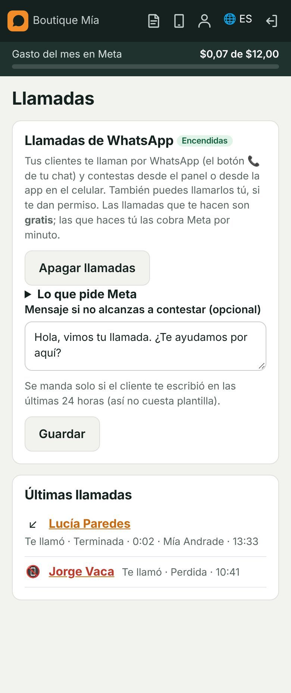
Cuando te escribe alguien, el programa decide en este orden:
Ninguno contesta a contactos personales, ni mientras alguien del equipo atiende la conversación.
Esto se explica también arriba de la pantalla Automático, donde está la opción Callarse cuando contesta alguien del equipo.
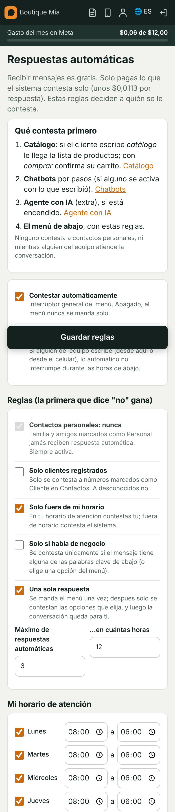
En Más → Equipo y reparto:
Por cada persona: conversaciones esperando respuesta (y desde cuándo la más vieja), asignadas, sin leer, a cuántos atendió hoy y cuánto tarda en dar la primera respuesta. Arriba, cuántas esperan sin nadie asignado.
Solo reciben quienes están Disponibles y marcados en "Quién recibe conversaciones". Con Pasar conversaciones mueves todas las de alguien a otra persona (por ejemplo, en vacaciones).
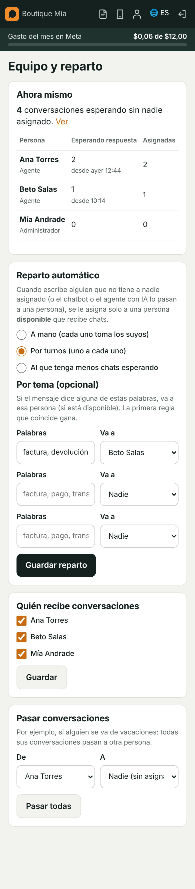
Datos propios que quieres guardar de cada cliente: ciudad, cédula, talla, fecha de cumpleaños, placa del carro…
Salen en la descarga a Excel de contactos (Más → Integraciones).
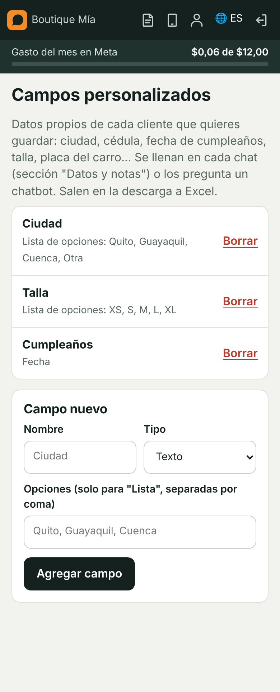
Cuando alguien te escribe desde un anuncio de Facebook o Instagram con el botón "Enviar mensaje de WhatsApp", Meta avisa de qué anuncio vino. El programa lo guarda solo:
Reportes también muestra los pedidos pagados del período y el ticket promedio, además de lo de siempre (mensajes por día, tiempo de respuesta y por persona del equipo).
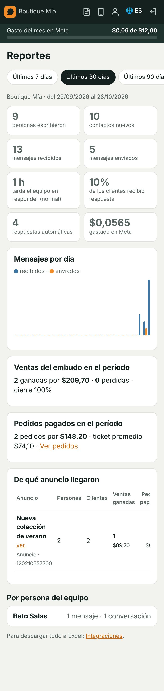
Desde ahí:
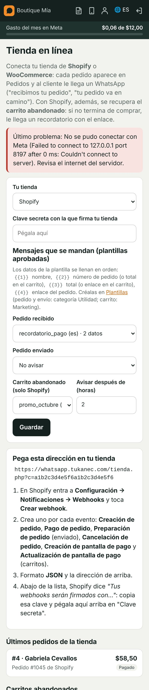
Te avisa cada mensaje nuevo de las conversaciones que atiendes; si nadie la atiende, avisa a todo el equipo que recibe chats.
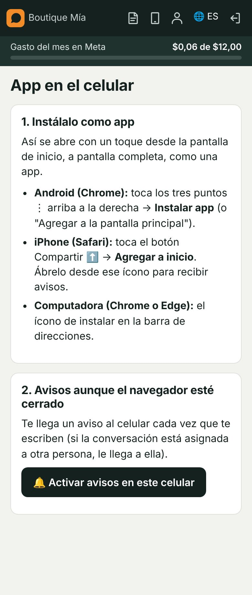
Las que te hacen tus clientes son gratis. Las que haces tú las cobra Meta por minuto, aparte, como los mensajes.
No. Queda en Pruebas hasta que Plux certifique tu instalación; ahí cambias a Producción en Cobros. El dinero cae en tu cuenta de Plux.
No. El plan incluye todo el programa, con varios usuarios y contactos ilimitados. Lo único que se activa aparte es el Agente con IA.
Meta, directo a tu tarjeta en tu cuenta de Meta, sin recargo de Tukán. Recibir mensajes y contestar desde la app del celular es gratis. El tope de gasto del mes lo pones tú en Gasto.
Por el sistema, Meta solo deja mandar una plantilla aprobada pasadas 24 horas. Descarga el PDF y mándalo desde el celular, o manda primero una plantilla.
La IA usa solo lo que escribes en "Lo que sabe la IA". Revisa y completa esa información. Si algo no está ahí, la IA pasa la conversación a una persona.
Lo automático se calla durante las horas que configures en Automático, para no interrumpir.
Sí: al conectarlo con código QR sigue funcionando en el celular y además aparece aquí, con sus contactos e historial.
Tukán Software · Sistemas que trabajan por tu negocio · WhatsApp 099 640 8397 · info@tukansoftware.com · tukansoftware.com